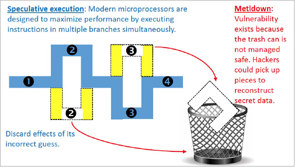

Project Zero Team'sTake onMeltdown & Spectre
Google's Project Zero team discovered critical CPU flaw
In 2015, Google's Project Zero team discovered a hardware vulnerability, called Meltdown and Spectre, affecting Intel x86, IBM POWER and some ARM-based microprocessors. It allows a rogue process to read all memory including security and private data, even when it is not authorized to do so. Meltdown affects a wide range of systems. At the time of disclosure, this included all devices running any but the most recent and patched versions of iOS, Linux, macOS, or Windows. Accordingly, many servers and cloud services were impacted, as well as a potential majority of smart devices and embedded devices using ARM based processors (mobile devices, smart TVs, printers and others), including a wide range of networking equipment.
A purely software workaround to Meltdown has been assessed as slowing computers between 5 and 30 percent in certain specialized workloads, although companies responsible for software correction of the exploit are reporting minimal impact from general benchmark testing. No known attacks have been reported yet though. In fact, Apple was hit with a class action lawsuit by New York lawyer Mark Rifkin, which alleges that Apple knowingly sold devices with the security flaws to customers and did not inform customers that the fixes could cause a performance slowdown, affecting the quality of their products. Intel has already faced a number of lawsuits in relation to this security flaws, including a class action suit filed by Rifkin's law firm, Wolf Haldenstein.
The Project Zero researcher, Jann Horn, demonstrated that malicious actors could take advantage of speculative execution to read system memory that should have been inaccessible. For example, an unauthorized party may read sensitive information in the system's memory such as passwords, encryption keys, or sensitive information open in applications. Testing also showed that an attack running on one virtual machine was able to access the physical memory of the host machine, and through that, gain read-access to the memory of a different virtual machine on the same host.
These vulnerabilities affect many CPUs, including those from AMD, ARM, and Intel, as well as the devices and operating systems running on them.
As soon as Google learned of this new class of attack, their security and product development teams mobilized to defend Google's systems and their users' data. Google have updated their systems and affected products to protect against this new type of attack. Google also collaborated with hardware and software manufacturers across the industry to help protect their users and the broader web. These efforts have included collaborative analysis and the development of novel mitigations.
*RuhrSec 2018: "The Story of Meltdown and Spectre", Dr. Daniel Gruss & Jann Horn
Methods of Attack
To take advantage of this vulnerability, an attacker first must be able to run malicious code on the targeted system.
The Project Zero researchers discovered three methods (variants) of attack, which are effective under different conditions. All three attack variants can allow a process with normal user privileges to perform unauthorized reads of memory data, which may contain sensitive information such as passwords, cryptographic key material, etc.
In order to improve performance, many CPUs may choose to speculatively execute instructions based on assumptions that are considered likely to be true. During speculative execution, the processor is verifying these assumptions; if they are valid, then the execution continues.
If they are invalid, then the execution is unwound, and the correct execution path can be started based on the actual conditions. It is possible for this speculative execution to have side effects which are not restored when the CPU state is unwound, and can lead to information disclosure.
There is no single fix for all three attack variants; each requires protection independently. Many vendors have patches available for one or more of these attacks.
We will continue our work to mitigate these vulnerabilities and will update both our product support page and this blog post as we release further fixes. More broadly, we appreciate the support and involvement of all the partners and Google engineers who worked tirelessly over the last few months to make our users and customers safe.
What Are Meltdown and Spectre?
Spectre is a “fundamental design flaw” that exists in every CPU on the market—including those from AMD and ARM as well as Intel. There is currently no software fix, and it will likely require a complete hardware redesign for CPUs across the board—though thankfully it is fairly difficult to exploit, according to security researchers. It's possible to protect against specific Spectre attacks, and developers are working on it, but the best solution will be a CPU hardware redesign for all future chips.
Meltdown basically makes Spectre worse by making the core underlying flaw much easier to exploit. It's essentially an additional flaw that affects all Intel processors made in the past few decades. It also affects some high-end ARM Cortex-A processors, but it doesn't affect AMD chips. Meltdown is being patched in operating systems today.
But how do these flaws work?
Programs running on your computer run with different levels of security permissions. The operating system kernel—the Windows kernel or the Linux kernel, for example—has the highest level of permissions because it runs the show. Desktop programs have fewer permissions and the kernel restricts what they can do. The kernel uses the processor's hardware features to help enforce some of these restrictions, because it's faster to do it with hardware than software.
The problem here is with “speculative execution”. For performance reasons, modern CPUs automatically run instructions they think they might need to run and, if they don't, they can simply rewind and return the system to its previous state. However, a flaw in Intel and some ARM processors allows processes to run operations that they wouldn't normally be able to run, as the operation is performed before the processor bothers to check whether it should have permission to run it or not. That's the Meltdown bug.
The core problem with both Meltdown and Spectre lies within the CPU's cache. An application can attempt to read memory and, if it reads something in the cache, the operation will complete faster. If it tries to read something not in the cache, it will complete slower. The application can see whether or not something completes fast or slow and, while everything else during speculative execution is cleaned up and erased, the time it took to perform the operation can't be hidden. It can then use this information to build a map of anything in the computer's memory, one bit at a time. The caching speeds things up, but these attacks take advantage of that optimization and turns it into a security flaw.
So, in a worst case scenario, JavaScript code running in your web browser could effectively read memory it shouldn't have access to, such as private information held in other applications. Cloud providers like Microsoft Azure or Amazon Web Services, who host multiple different company's software in different virtual machines on the same hardware are particularly at risk. One person's software could, in theory, spy on things in another company's virtual machine. It's a breakdown in the separation between applications. The patches for Meltdown means this attack won't be as easy to pull off. Unfortunately, putting these extra checks into place means some operations will be slower on affected hardware.
What Do I Need to Do?
Some updates to fix the Meltdown issue are already available. Microsoft has issued an emergency update to supported versions of Windows via Windows Update on January 3, 2018, but it hasn't made it to all PCs yet. The Windows Update that solves the Meltdown and adds some protections against Spectre is named KB4056892.
Apple already patched the issue with macOS 10.13.2, released on December 6, 2017. Chromebooks with Chrome OS 63, which was released in mid-December, are already protected. Patches are also available for the Linux kernel.
In addition, check to see if your PC has BIOS/UEFI updates available. While the Windows update fixed the Meltdown problem, CPU microcode updates from Intel delivered via a UEFI or BIOS update are needed to fully enable protection against one of the Spectre attacks. You should also update your web browser—as usual—as browsers are adding some protections against Spectre, as well.
Legal Data
Legal Aspects of such type of Hardware Vulnerabilities:
1. Legal analysis of when to disclose vulnerabilities
2. Practical and legal challenges in attribution
NICE Workforce Framework
The requirements for cybersecurity can vary widely from organization to organization. A role that can be extremely relevant to a specific business may not make sense for a smaller company or even a larger one but that works in another segment.
After going through the whole article here and completing the practical you will get some knowledge and skills that will help you to sort through some work roles which will discuss about your competency in certain aspects.
Below is a list of KS (Knowledge/Skill) provided by NICE Framework which is a part of Workforce Development by NICCS (NATIONAL INITIATIVE FOR CYBERSECURITY CAREERS AND STUDIES) which the reader here could have obtained:
| KSA ID | Knowledge |
|---|---|
| Knowledge | |
| K0001 | Knowledge of computer networking concepts and protocols, and network security methodologies. |
| K0002 | Knowledge of risk management processes (e.g., methods for assessing and mitigating risk). |
| K0003 | Knowledge of laws, regulations, policies, and ethics as they relate to cybersecurity and privacy. |
| K0004 | Knowledge of cybersecurity and privacy principles. |
| K0005 | Knowledge of cyber threats and vulnerabilities. |
| K0006 | Knowledge of specific operational impacts of cybersecurity lapses. |
| K0046 | Knowledge of intrusion detection methodologies and techniques for detecting host and network-based intrusions. |
| K0070 | Knowledge of system and application security threats and vulnerabilities (e.g., buffer overflow, mobile code, cross-site scripting, Procedural Language/Structured Query Language [PL/SQL] and injections, race conditions, covert channel, replay, return-oriented attacks, malicious code). |
| K0107 | Knowledge of Insider Threat investigations, reporting, investigative tools and laws/regulations. |
| K0110 | Knowledge of adversarial tactics, techniques, and procedures. |
| K0114 | Knowledge of electronic devices (e.g., computer systems/components, access control devices, digital cameras, digital scanners, electronic organizers, hard drives, memory cards, modems, network components, networked appliances, networked home control devices, printers, removable storage devices, telephones, copiers, facsimile machines, etc.). |
| K0118 | Knowledge of processes for seizing and preserving digital evidence. |
| K0123 | Knowledge of legal governance related to admissibility (e.g. Rules of Evidence). |
| K0125 | Knowledge of processes for collecting, packaging, transporting, and storing electronic evidence while maintaining chain of custody. |
| K0128 | Knowledge of types and collection of persistent data. |
| K0144 | Knowledge of social dynamics of computer attackers in a global context. |
| K0155 | Knowledge of electronic evidence law. |
| K0156 | Knowledge of legal rules of evidence and court procedure. |
| K0168 | Knowledge of applicable laws, statutes (e.g., in Titles 10, 18, 32, 50 in U.S. Code), Presidential Directives, executive branch guidelines, and/or administrative/criminal legal guidelines and procedures. |
| K0209 | Knowledge of covert communication techniques. |
| K0231 | Knowledge of crisis management protocols, processes, and techniques. |
| K0244 | Knowledge of physical and physiological behaviors that may indicate suspicious or abnormal activity. |
| K0251 | Knowledge of the judicial process, including the presentation of facts and evidence. |
| K0351 | Knowledge of applicable statutes, laws, regulations and policies governing cyber targeting and exploitation. |
| K0624 | Knowledge of Application Security Risks (e.g. Open Web Application Security Project Top 10 list) |
| Skill | |
| S0047 | Skill in preserving evidence integrity according to standard operating procedures or national standards. |
| S0068 | Skill in collecting, processing, packaging, transporting, and storing electronic evidence to avoid alteration, loss, physical damage, or destruction of data. |
| S0072 | Skill in using scientific rules and methods to solve problems. |
| S0086 | Skill in evaluating the trustworthiness of the supplier and/or product. |
Have a Question? Ask Us
We will get back to you